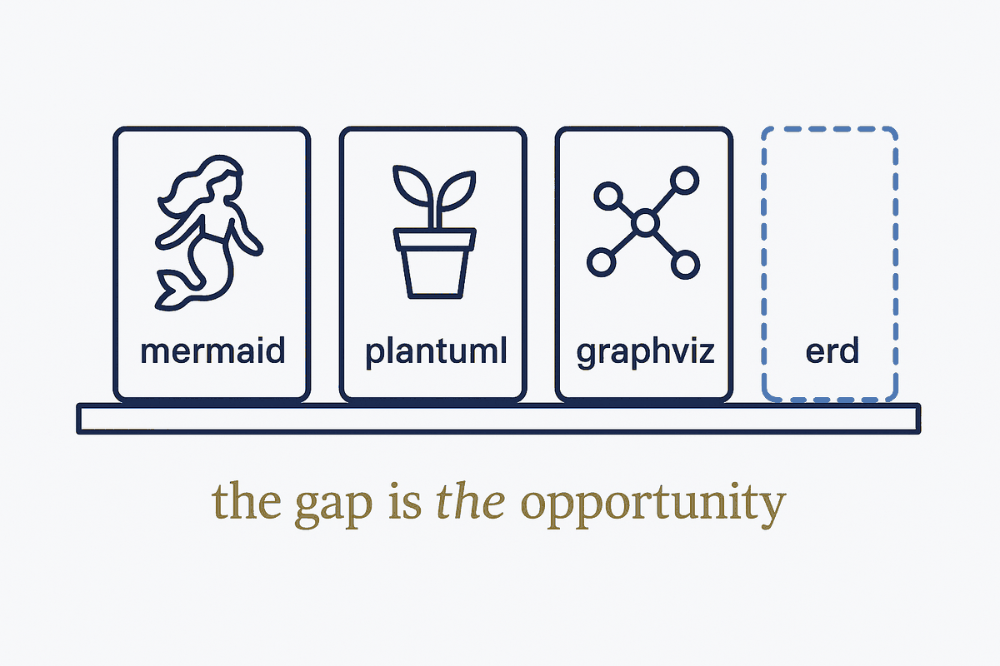

Skills

Claude skills are folders with a SKILL.md: frontmatter plus instructions, loaded on demand. They are the obvious way to make a diagram generator available inside a conversation — so we went looking for the ones that already exist.
The finding was thinner than expected. Anthropic’s official repository holds 17 skills and not one generates a diagram. A GitHub search for diagram skills returns two repositories, with 2 and 0 stars. Two of the three skills most commonly cited in write-ups return 404.
There is no ERD skill. For anyone modelling data, that is an unoccupied space — and the reason is instructive: the visual skills that do exist draw from a prompt. A useful one would generate from the model: deterministic, multi-notation, carrying provenance, and able to round-trip. Identical in a demo; different in month three.
Skills we intend to publish: an ERD skill (metadata in; Mermaid, draw.io and GraphML out) and a brief skill (markdown + frontmatter as an installable convention). Both are packaging work — the generators already exist.